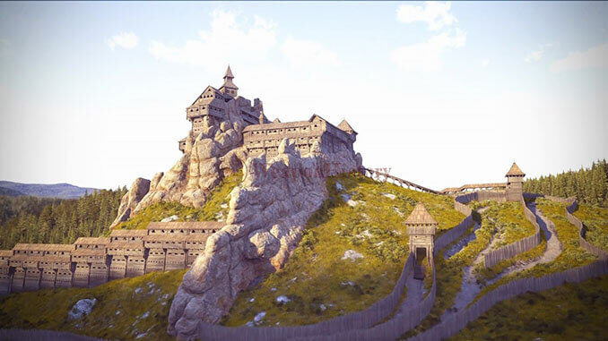

Фортеця Тустань – унікальне місце, що приваблює мандрівників, туристів, істориків та археологів. Споруди, що стоять століттями,
дають змогу доторкнутися до історії нашої Батьківщини. Щороку, щоб пройти шлях середньовічних подорожніх, побачити мури та фортеці,
що захищали велич української землі, в Тустань, що біля Східниці, з’їжджаються сотні туристів зі всієї України.
Особливо багато відвідувачів приймає наскельне місто-фортеця Тустань на початку серпня – збирає любителів середньовічної старовини фестиваль ТуСтань.
Тут на території легендарної оборонної споруди, глядачі стають учасниками справжніх лицарських турнірів та мають змогу поглибити знання з історії,
дізнатися цікаві факти про легендарне місце, поринути в атмосферу завдяки виставам, пісням та танцям.
Як доїхати в Тустань, якщо не маєте власного авто: до заповідника курсує громадський транспорт
– автобус чи потяг зі Стрия, Східниці, Трускавця та Сколе. Для охочих організовують поїздки в Тустань зі Східниці та інших курортних містечок.
Це місце варте того, щоб не один раз поставити галочку “відвідано”. Тож відпочинок в Східниці рекомендуємо обов’язково поєднати з екскурсією в місто-фортецю Тустань.

Київська Русь була великою і сильною державою, її обороняли відважні воїни та могутні фортеці.
Одна з таких – Тустань, яка розташувалась поміж лісів Карпат, де пролягав Соляний торговий шлях із Дрогобича до Європи,
та відрізок Шовкового шляху Португалія – Китай у IX–XIII ст. Тустань свого часу виконувала роль стратегічного пункту лінії оборони,
митниці та адміністративного центру, та контролювала значну частину морських шляхів.
Скелі із забудовою височіли більше, ніж на 90 м. Фортеця Тустань розташована на скелях Острий Камінь, Камінь та Мала Скеля, яким близько 55 млн років.
Спосіб будівництва Тустані не має аналогів у світі. За період свого існування фортеця пережила п’ять етапів дерев’яної збудови.
Об’єкт унікальний за технологією будівництва – природні проміжки між стрімкими скелями наші предки заповнили дерев’яними зрубами, що вставлялися в скельні пази.
9 рівнів забудови – галереї, житлові, господарські та оборонні споруди, які з усіх боків захищали фортецю.
Тут все продумано до дрібниць – з бойових частин вежі зручно було оглядати навколишню територію, що була, мов на долоні,
а видовбані у камені колодязі могли забезпечити залогу 50 осіб на 250 днів. Оточена двома лініями оборони – частоколом, ровами і ставом.
Фортеця Тустань пережила монголо-татарський напад, та до наших днів споруди на скелях не збереглися.
За викарбуваними у камені слідами досліднику Михайлу Рожку вдалося відтворити тогочасний вигляд кріпості. Завдяки йому ми маємо уявлення про вигляд тогочасної твердині.

Сьогодні пам’ятка під опікою державного історико-культурного заповідника “Тустань”.
Туристам цікаво буде побачити залишки могутнього муру, що захищав від ворожих нападів, коридори, сходи, печери, колодязі та склепіння,
цистерни для зберігання води, а також зруби, з допомогою яких будувалася могутня споруда.
Місце, на якому колись стояло місто-фортеця Тустань своєю незвичайною формою нагадує замок.
Фортеця територіально відноситься до національного парку “Сколівські Бескиди”, саме тут в 1970 році знімали драму “Захар Беркут”.
Чого лише варті пейзажі – враження, що потрапляєш в казку чи фільм. Адже краєвиди, що відкриваються згори просто неймовірні.
В Тустань, що біля Східниці, сподобається усім – бувалим туристам та бажаючим побути подалі від буденної метушні,
послухати цікаві факти з історії карпатської фортеці. Тустань оцінять екстремали-скелелази та любителі походів. Існує три маршрути для піших екскурсій,
найкоротший подолаєте за годину, найдовший триватиме чотири години. Досягнувши вершини, маєте два шляхи – спуститися до джерела або до скелі “Гострий камінь”.
Варто оглянути експонати з музейної експозиції – макет фортеці Тустань, документи та предмети, знайдені під час археологічних пошуків.
А ще одягнути на себе справжні лицарські обладунки, потримати в руках булаву та посидіти на князівському кріслі.
Біля музею знаходиться дерев’яна церква святого Миколая, яку теж варто відвідати.

Фестиваль ТуСтань на арені наскельного міста-фортеці – родзинка цього краю.
Він проводиться з 2006 року та вже 14 років поспіль запрошує поринути в середньовічну атмосферу та відчути її сповна.
Фестиваль “Ту Стань!” традиційно проходить на початку серпня та пропонує безліч розваг:
взяти участь у бугуртах та лицарських поєдинках, постріляти з луків та арбалетів, оглянути театральні вистави, послухати вуличних музикантів,
відвідати середньовічний ярмарок. Для дітей та дорослих на фестивалі цікавими будуть воркшопи, екскурсії та вистави.
Адже сюди запрошують істориків, танцюристів, етнографів, реконструкторів, музикантів, майстрів народного промислу, що діляться своїм досвідом, вміннями та знаннями.
Атмосфера колоритного видовища поглинає глядачів та учасників фестивалю ТуСтань, що танцюють, співають, влаштовують лицарські бої,
пробують ремесла та куштують смачні страви. Доброю традицією тут стало дивувати гостей
– нічний штурм фортеці Тустань, лазерне та вогняне шоу, ватра, кінопоказ. Фестиваль славиться тим, що глядачі беруть участь у дійстві,
яке стає реальним завдяки художньому та режисерському оформленню. Тут стираються часові межі між теперішнім та лицарським періодом.
Кожен може стати лицарем та ремісником.
Фестиваль ТуСтань триває 3 дні, квитки можна замовити заздалегідь.
Вартість на один день – 120 грн, на три дні – 250 грн, школярі зможуть відвідати за 80 грн. Безкоштовно – діти до 6 років, інваліди, учасники АТО.

{kind=link}
{kind=link}